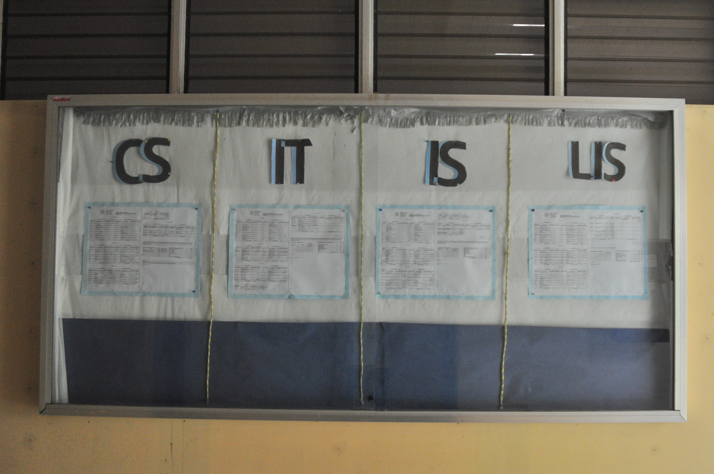

A leading Christian institution in library, information, and computing, and a center of excellence in research and education in Southeast Asia.
In November 1988, the Silliman University Computer Center (SUCC) was established with the objective of centralizing computer degree offerings of the University. Engr. Alfredo T. Ang was the appointed head of this unit. Originally, the center serviced the computer courses required by the Commission on Higher Education (CHED) for non-IT degrees as well as short courses. These short courses were open to all interested members of the community. In 1992, services were expanded to include the computer degree (Bachelor of Science in Business Computer Application), a degree offering of the College of Business Administration (CBA).
In June 1994, the Computer Center moved to the newly completed Uytengsu Foundation Computer Center Building, which was later renamed Uytengsu Foundation Computer Center (UFCC). In 1999, the UFCC’s services were further expanded to include the second computer degree offering of CBA, Bachelor of Science in Information Technology.
In line with the Commission on Higher Education’s thrust to control the number of Information Technology Education degrees and to centralize its offering within the institution, Silliman University created the College of Information Technology and Computer Sciences. The College became fully operational in June 2001, with Engr. Ang as its Acting Dean. The first degree offerings were the Bachelor of Science in Information Technology (BSIT) and Bachelor of Science in Computer Science (BSCS). In the following year, the College offered the Bachelor of Science in Information Management (BSIM), now known as the Bachelor of Science in Information Systems (BSIS) program.
To guarantee that effective degrees are offered with appropriate courses and competent methods, the College had the BSIT degree accredited in May 2004 by the Philippine Accrediting Association of Schools, Colleges and Universities (PAASCU). It was granted Level 1 status. In August 2006, the College was renamed to what is now known as the College of Computer Studies (CCS).
The Commission on Higher Education (CHED) has granted the College the distinction as Center of Development (COD) in Information Technology Education from 2007 to 2011. Following the untimely demise of its Acting Dean in September 2006, Prof. Dave E. Marcial was appointed Dean in June 2007. It is during Dr. Marcial’s time when the Uytengsu Foundation Computer Studies Hall was built, completed, and inaugurated in 2008 right behind the Uytengsu Foundation Computer Center.
The following year 2009, the Master in Information Systems (MIS) graduate degree program was implemented to prepare students for industrial practice in project management, information systems planning, design development, and management of technical personnel. In June 2013, Dr. Yong Gyun Kim, a professor of the College of Engineering and Design (CED), was appointed OIC Dean of the College. But due to the lack of faculty in CED, Dr. Kim relinquished his OIC Dean appointment and Dr. Marcial took over as OIC Dean until May 2016. To date, Dr. Marcial is the Dean of CCS.
One laboratory that challenges students to innovate; nurtures mistakes and transforms them into an opportunity to learn and create an impact in the community is the vision of the Apps Incubation and Development Laboratory that was inaugurated last October 27, 2015. It is located at the Uytengsu Foundation Computer Center, the Apps Lab can be among the first in the country, geared towards empowering the youth to think with their creativity in putting what can initially be “bold” and “wild” ideas into mobile iOS applications. Pursuant to CHED’s Memorandum on the shift to Outcome-Based Education (OBE) pedagogy, CCS revised and implemented the OBE curriculum for BSCS, BSIS, and BSIT effective 2nd Semester of SY 2015-2016.
CHED has granted the College the distinction as Center of Excellence (COE) in Information Technology Education from January 2016 to December 2018. The Federation of Accrediting Agencies of the Philippines (FAAP) granted Level II Re-Accredited Status to the Information Technology, Computer Science and Information Systems programs of CCS for having satisfactorily met the standards and fulfilled all the requirements of (PAASCU). Such distinction was awarded last February 2016 and is valid until December 2020. The BLIS program was transferred to the College effective June 2017. This transfer of the BLIS program from the College of Education to CCS was recommended by the CHED PRC technical team during their October 23, 2016 visit in the University.